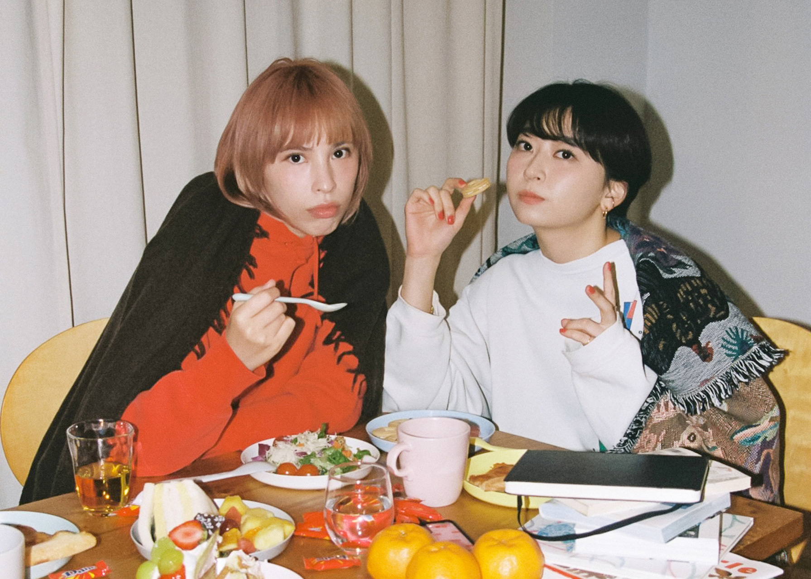

El EP titulado "EP" es el primer EP del dúo Chelmico. Este trabajo ayudó a consolidar su estilo y presencia en la escena musical japonesa, mostrando una evolución en su sonido y producción. Este EP demostró la capacidad del dúo para evolucionar y diversificar su sonido, sentando las bases para futuros lanzamientos y consolidando su posición en la industria musical.
"Zuruine" se destacó rápidamente dentro del EP y se convirtió en una de las canciones más reconocidas de Chelmico. El lanzamiento de su videoclip también contribuyó a su popularidad. El video usa imágenes y colores vivos y que hacen resaltar mas los sentimientos dados en el video, lo que atrajo a muchos espectadores junto con la melodía de la canción.Chelmico se formó en 2014 después de que Rachel Watashiga y Mamiko Suzuki se conocieron a través de un amigo mutuo en un McDonald's en Arakawa, en Tokio, Japón. Las dos se unieron por el amor a la música, particularmente por el grupo japonés de hip-hop Rip Slyme, y pronto se hicieron amigas habituales. En ese momento, Watashiga hizo un trabajo de modelado y apareció en el fondo de videos musicales para Oomori Seiko. Cuando una de sus amigas le ofreció 10 minutos durante un evento musical que estaban organizando en la primavera de 2014, Watashiga invitó a Suzuki a rapear con ella.
El siguiente paso llegó un año después, cuando se les dio otra oferta para actuar en otro espectáculo durante quince minutos. Las dos se acercaron al rapero PAGE, entonces conocido como Holly Page, para proporcionar una pista mientras escribían letras. El resultado final fue Labyrinth '97, su primer sencillo. Su primer álbum homónimo se lanzó en octubre de 2016 bajo la etiqueta Cupcake ATM. En 2018, lanzaron su álbum POWER bajo unBORDE, una división de Warner Music Japan, con quien han estado desde entonces.
Su sencillo, Easy Breezy, (lanzado el 17 de enero de 2020) se utilizó como tema de apertura para la adaptación al anime de Keep Your Hands Off Eizouken! Más tarde ese año, aparecieron en el sencillo del grupo m-flo RUN AWAYS.
Sus dos singles, milk y Disco (Bad dance doesn't matter), fueron lanzados en julio y agosto (respectivamente) adelantándose a su tercer álbum, maze. El álbum salió a la venta el 26 de agosto de 2020.
El 14 de marzo de 2021, Rachel anunció que se tomaría un descanso de las actuaciones debido a su matrimonio y embarazo. Expresó su esperanza de volver a la música a finales de año. Rachel anunció que dio a luz a su primer hijo el 7 de junio de 2021.
El dúo publicó su tercer EP, "COZY", el 16 de abril de 2021, tras el lanzamiento de su single homónimo a principios de ese mes.
El 19 de noviembre de 2021, el dúo lanzó un sencillo titulado "300 Million Yen". A este le siguió otro sencillo el 17 de marzo de 2022, titulado 'Meidaimae' Ambos aparecerían en su siguiente álbum de estudio, 'Gokigen', que salió a la venta el 1 de junio de 2022.